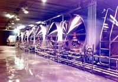
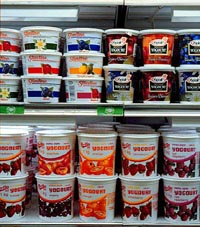

Contribution to
Sask. Agriculture
Higher Milk Production
Fewer Dairy Cattle
Nutrients in Milk
Improvements in
Milk Production
From the Farm
to the Dairy
Common Methods
of Mechanized Milking
Milk Processing
|
There are over 45,000 dairy cows on Saskatchewan farms. Milk is shipped by truck to dairy processing plants, where a variety of milk products are produced. The production of dairy products in factories rather than on farms is a North American innovation. The keeping of cows for milking is a practice that goes back thousands of years. Initially, cattle were kept to supply milk to the farm family. Only for the past one hundred years has the distribution of milk and milk products become a commercial industry. |
|
Dairy's Contribution to Saskatchewan's Agricultural Production Dairy production contributes 3.1% of Saskatchewan's total farm cash receipts, with annual sales of 100 million dollars. Although dairy farming's share of the agricultural economy seems small compared to other aspects of agriculture, considerable value is added to the economy through processing and marketing dairy products. Effective Aug. 1, 1998, fluid milk (including cream) is no longer subjected to retail or wholesale price regulations. The decision, made by the Saskatchewan Milk Control Board, makes Saskatchewan consistent with most other provinces. The Saskatchewan Milk Control Board is the regulatory agency governing the production and marketing of milk and other dairy products within the province.
Specialized industries like dairy provide stability to the agricultural economy when other sectors suffer setbacks due to poor weather or low prices.
Higher Milk Production - Fewer Dairy Cattle Since the 1920s, the number of dairy cows on farms has declined substantially. In Canada, the dairy herd dropped a further 10% between 1986 and 1991. Yet, during this time, milk production has risen steadily. Milk production per cow has been enhanced through breeding and selection, and by better nutrition. Dairy cows now produce twice as much milk per year as their predecessors did fifty years ago. Agricultural science has been a significant factor in this development, through an increased understanding of genetics, advances in veterinary medicine, and the analysis of how nutrients in cattle feed contribute to milk quality and production.
There are over 45,000 dairy cows on Saskatchewan farms. Milk is shipped by truck to dairy processing plants, where a variety of milk products are produced. The production of dairy products in factories rather than on farms is a North American innovation.
Whole milk contains from 3 to 5% fat; skim milk has had the fat removed. Today, few people consume whole milk, preferring partly skimmed -- 1 or 2% fat -- or skim milk. Milk is homogenized to prevent the fat from rising to the top. Milk is an excellent source of protein, calcium and the B vitamins: niacin, thiamine and riboflavin.
Composition of Some Dairy products
Improvements in Milk Production Dairy farming is a complex process, making effective use of new technology and scientific advances. Milking machines save on labour, and make it possible to keep more cows more efficiently. Computers are often used in formulating rations and in record keeping.
Milk is a perishable commodity. It must be cooled to between two to five degrees C within two hours of leaving the cow. The whole dairy industry, from dairy farmers to workers in the dairy plant, is attentive to processing milk quickly and efficiently, always being careful to comply with established legal standards of health and sanitation.
Milk from healthy cows properly cared for is a safe and nutritious food. Modern practices such as regular veterinary inspection of cows, pasteurization, and improved processing further ensures the safety and quality of milk and milk products.
 Milk is pumped from milking machines through pipes to refrigerated stainless steel bulk tanks, where it is stored for a day or two. Large tanker trucks transport milk from farms to holding tanks at the dairy plant.
After undergoing quality tests, milk is separated into milks and creams containing different levels of milk fat. These products are pasteurized and packaged as they are, processed into other dairy products.
Common Methods of Mechanized Milking For centuries, cows were milked by hand. Farmers kept as many cows as they, their families or hired hands could milk. Today, machines use gentle suction to milk cows, allowing one dairy worker to manage many more cows. Larger dairy farms often use milking parlours, such as those shown above, where cows are milked in groups on raised platforms, or they may be milked where they stand in long rows of stanchions.
The herringbone and rotary formation make it easier to handle a large number of cows quickly and easily. One group is milked, and ushered out of the parlours, as another group moves in.
A separator uses centrifugal force to separate cream from milk, thereby regulating the percentage of fat in milk. Pasteurization destroys harmful bacteria and other micro-organisms that may be hazardous to human health, and also improves the keeping quality of the milk. Spray dryers produce powdered milk in large drying chambers. Condensed milk is sprayed into hot dry air, then the dried milk is separated from the moistened air. Homogenization is an emulsifying process which reduces the size of fat globules in milk, to prevent the separation of fat in milk, light creams and evaporated milk. Butter is made by churning pasteurized cream, a task that was once done by hand in wooden churns on farms.
Bacterial culture is being added to milk. Products such as yogurt and buttermilk are made by introducing a specific bacterial culture to milk.

Packaging In the modern dairy plant, milk is often packaged in plastic pouches for sale to individual consumers. Packaging protects products from spoilage and gives important information on size, ingredients and nutritional value.
The process of producing blocks of butter is called "printing". Butter keeps well and is sold in pound or half pound blocks.
Ice Cream Frozen desserts are very complex foods. They are foams - air mixed in a liquid containing ice crystals, emulsified fat globules, proteins, sugars, salts and stabilizers. Ice cream and sherbet are regulated according to how much milk fat and milk solids they contain. The most commonly purchased ice cream is the old stand-by vanilla. Skim Milk Powder Skim milk powder is made by evaporation. Skim milk is packaged for use in baking. Non-fat dry milk is useful in making low-fat breads.
Buttermilk Unripened cultured milk products such as buttermilk ( as well as yoghurt, cottage cheese etc.) are made by converting the milk sugar, lactose, into lactic acid by specific macroorganisms called a lactic culture. There are many different lactic bacteria that grow at different temperatures and not only produce lactic acid but also delicate flavours. Buttermilk is made incubating low fat or skimmed milk at 20-22 degrees C in the presence of beneficial micro-organisms called streptococcus lactis. Butter granules or flakes, salt and citric acid are added to enhance flavour.  Yoghurt Yogurt originated in Turkey many years ago. It is also made, like buttermilk in a fermentation process, using mixed bacterial cultures usually Lactobacillus bulgaricus, Streptococcus thermophilus and Lactobacillus acidophilus. Incubation temperatures are usually 45-47 degrees C. The yoghurt cultures produce the compound acetaldehyde which gives the yoghurt its characteristic flavour. Yoghurt can be made from low fat, skimmed milk or even cream. It may be sold as is, or with fruit and sugar or sweetener added. There are literally dozens of combinations possible. How many different kinds of yoghurt did you see on the supermarket shelves? How much fat is there in a low-fat yoghurt? Next time you are in the store, check the labels and see for yourself.
Cheese Cheese is made by coagulating the major protein in milk casein with bacterial cultures or enzymes. The moisture or whey is drained off leaving the curds. The curds are heated to contract the curd particles and squeeze out excess whey and then drained, stretched and allowed to cure or ripen. Cottage cheese is an example of a kind of cheese that is sold fresh, without having been aged. Cheese is made in large vats. Kinds of cheese vary according to the milk and the environment in which they are cultured. Did you know that there are over 800 different names for cheeses but often different names are used for the same cheese but in a different shape or from a different part of the world. There are really only about 18 cheese types: brick, Camembert, Cheddar, cottage, cream, Edam, Gouda, hand, Limberger, Neufchatel, Parmesan, Provolone, Romano, Roquefort, sapsago, Swiss, Trappist and whey cheeses. Did you know that the holes in cheese are called "eyes" and are produced in the ripening process from bacterial gases? Processed Cheese
This is a valuable dairy product of equal nutritional value and made from natural cheeses that can not be sold through regular markets because they have been damaged during the ripening process or storage. The damaged cheese is milled, mixed with emulsifiers and melted until it is homogeneous. Some factories produce processed cheese from cheaper, mild and unripened cheese directly.
Milk Equivalents of Common Dairy Products How much milk does it take to make dairy products? Probably more than you think. Check out the table below.
|